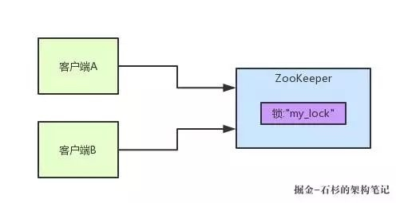
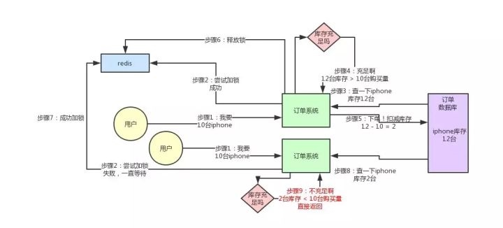

原文地址 https://zhuanlan.zhihu.com/p/51988123
【小宅按】现在面试都会聊聊分布式系统，通常面试官都会从服务框架（Spring Cloud、Dubbo），一路聊到分布式事务、分布式锁、ZooKeeper 等知识。今天就来聊聊分布式锁这块的知识，先具体的来看看 Redis 分布式锁的实现原理。
如果在公司里落地生产环境用分布式锁的时候，一定是会用开源类库的，比如 Redis 分布式锁，一般就是用 Redisson 框架就好了，非常的简便易用。感兴趣可以去 Redisson 官网看看如何在项目中引入 Redisson 的依赖，然后基于 Redis 实现分布式锁的加锁与释放锁。
一段简单的使用代码片段，先直观的感受一下：
是不是感觉简单的不行！此外，还支持 Redis 单实例、Redis 哨兵、Redis Cluster、redis master-slave 等各种部署架构，都可以完美实现。
Redisson 实现 Redis 分布式锁的底层原理
现在通过一张手绘图，说说 Redisson 这个开源框架对 Redis 分布式锁的实现原理。
加锁机制
看上面那张图，现在某个客户端要加锁。如果该客户端面对的是一个 Redis Cluster 集群，他首先会根据 Hash 节点选择一台机器。
注：仅仅只是选择一台机器！然后发送一段 Lua 脚本到 Redis 上，那段 Lua 脚本如下所示：
为啥要用 Lua 脚本呢？因为一大坨复杂的业务逻辑，可以通过封装在 Lua 脚本中发送给 Redis，保证这段复杂业务逻辑执行的原子性。
那么，这段 Lua 脚本是什么意思呢？这里 KEYS[1] 代表的是你加锁的那个 Key，比如说：RLock lock = redisson.getLock("myLock")；这里你自己设置了加锁的那个锁 Key 就是 “myLock”。
ARGV[1] 代表的就是锁 Key 的默认生存时间，默认 30 秒。ARGV[2] 代表的是加锁的客户端的 ID，类似于下面这样：8743c9c0-0795-4907-87fd-6c719a6b4586:1。
第一段 if 判断语句，就是用 “exists myLock” 命令判断一下，如果你要加锁的那个锁 Key 不存在的话，你就进行加锁。如何加锁呢？很简单，用下面的命令：hset myLock。
8743c9c0-0795-4907-87fd-6c719a6b4586:1 1，通过这个命令设置一个 Hash 数据结构，这行命令执行后，会出现一个类似下面的数据结构：
上述就代表 “8743c9c0-0795-4907-87fd-6c719a6b4586:1” 这个客户端对 “myLock” 这个锁 Key 完成了加锁。
接着会执行 “pexpire myLock 30000” 命令，设置 myLock 这个锁 Key 的生存时间是 30 秒，加锁完成。
锁互斥机制
这个时候，如果客户端 2 来尝试加锁，执行了同样的一段 Lua 脚本，会怎样？
第一个 if 判断会执行 “exists myLock”，发现 myLock 这个锁 Key 已经存在了。
第二个 if 判断，判断 myLock 锁 Key 的 Hash 数据结构中，是否包含客户端 2 的 ID，但是明显不是的，因为那里包含的是客户端 1 的 ID。
所以，客户端 2 会获取到 pttl myLock 返回的一个数字，这个数字代表了 myLock 这个锁 Key 的剩余生存时间。比如还剩 15000 毫秒的生存时间。此时客户端 2 会进入一个 while 循环，不停的尝试加锁。
watch dog 自动延期机制
客户端 1 加锁的锁 Key 默认生存时间才 30 秒，如果超过了 30 秒，客户端 1 还想一直持有这把锁，怎么办呢？
只要客户端 1 加锁成功，就会启动一个 watch dog 看门狗，这个后台线程，会每隔 10 秒检查一下，如果客户端 1 还持有锁 Key，就会不断的延长锁 Key 的生存时间。
可重入加锁机制
那如果客户端 1 都已经持有了这把锁了，结果可重入的加锁会怎么样呢？如下代码：
分析一下上面那段 Lua 脚本。第一个 if 判断肯定不成立，“exists myLock” 会显示锁 Key 已经存在了。
第二个 if 判断会成立，因为 myLock 的 Hash 数据结构中包含的那个 ID，就是客户端 1 的那个 ID，也就是 “8743c9c0-0795-4907-87fd-6c719a6b4586:1”。
此时就会执行可重入加锁的逻辑，incrby myLock 8743c9c0-0795-4907-87fd-6c71a6b4586:1 1，通过这个命令，对客户端 1 的加锁次数，累加 1。
此时 myLock 数据结构变为下面这样：
myLock 的 Hash 数据结构中的那个客户端 ID，就对应着加锁的次数。
释放锁机制
如果执行 lock.unlock()，就可以释放分布式锁，此时的业务逻辑也是非常简单的。就是每次都对 myLock 数据结构中的那个加锁次数减 1。
如果发现加锁次数是 0 了，说明这个客户端已经不再持有锁了，此时就会用：“del myLock” 命令，从 Redis 里删除这个 Key。
而另外的客户端 2 就可以尝试完成加锁了。这就是所谓的分布式锁的开源 Redisson 框架的实现机制。
一般我们在生产系统中，可以用 Redisson 框架提供的这个类库来基于 Redis 进行分布式锁的加锁与释放锁。
上述 Redis 分布式锁的缺点
上面那种方案最大的问题，就是如果你对某个 Redis Master 实例，写入了 myLock 这种锁 Key 的 Value，此时会异步复制给对应的 Master Slave 实例。
但是这个过程中一旦发生 Redis Master 宕机，主备切换，Redis Slave 变为了 Redis Master。
会导致客户端 2 尝试加锁时，在新的 Redis Master 上完成加锁，客户端 1 也以为自己成功加锁。
此时就会导致多个客户端对一个分布式锁完成了加锁。这时系统在业务语义上一定会出现问题，导致各种脏数据的产生。
所以这个就是 Redis Cluster，或者是 redis master-slave 架构的主从异步复制导致的 Redis 分布式锁的最大缺陷：在 Redis Master 实例宕机的时候，可能导致多个客户端同时完成加锁。
七张图彻底讲清楚 ZooKeeper 分布式锁的实现原理
下面再聊一下 ZooKeeper 实现分布式锁的原理。同理，我是直接基于比较常用的 Curator 这个开源框架，聊一下这个框架对 ZooKeeper（以下简称 ZK）分布式锁的实现。
一般除了大公司是自行封装分布式锁框架之外，建议大家用这些开源框架封装好的分布式锁实现，这是一个比较快捷省事的方式。
ZooKeeper 分布式锁机制
看看多客户端获取及释放 ZK 分布式锁的整个流程及背后的原理。首先看看下图，如果现在有两个客户端一起要争抢 ZK 上的一把分布式锁，会是个什么场景？

如果大家对 ZK 还不太了解的话，建议先自行百度一下，简单了解点基本概念，比如 ZK 有哪些节点类型等等。
参见上图。ZK 里有一把锁，这个锁就是 ZK 上的一个节点。两个客户端都要来获取这个锁，具体是怎么来获取呢？
假设客户端 A 抢先一步，对 ZK 发起了加分布式锁的请求，这个加锁请求是用到了 ZK 中的一个特殊的概念，叫做 “临时顺序节点”。
简单来说，就是直接在 "my_lock" 这个锁节点下，创建一个顺序节点，这个顺序节点有 ZK 内部自行维护的一个节点序号。
比如第一个客户端来搞一个顺序节点，ZK 内部会给起个名字叫做：xxx-000001。
然后第二个客户端来搞一个顺序节点，ZK 可能会起个名字叫做：xxx-000002。
注意，最后一个数字都是依次递增的，从 1 开始逐次递增。ZK 会维护这个顺序。
所以这个时候，假如说客户端 A 先发起请求，就会搞出来一个顺序节点，大家看下图，Curator 框架大概会弄成如下的样子：
客户端 A 发起一个加锁请求，先在要加锁的 node 下搞一个临时顺序节点，这列长名字都是 Curator 框架自己生成出来的。
然后，那个最后一个数字是 "1"。因为客户端 A 是第一个发起请求的，所以给他搞出来的顺序节点的序号是 "1"。
接着客户端 A 创建完一个顺序节点。还没完，他会查一下 "my_lock" 这个锁节点下的所有子节点，并且这些子节点是按照序号排序的，这个时候他大概会拿到这么一个集合：
接着客户端 A 会走一个关键性的判断：这个集合里创建的顺序节点，是否排在首位？
如果是的话，就可以加锁，因为明明我就是第一个来创建顺序节点的人，所以我就是第一个尝试加分布式锁的人啊！
加锁成功！看下图，再来直观的感受一下整个过程：
接着假如说，客户端 A 都加完锁了，客户端 B 过来想要加锁了，这个时候他会干一样的事儿：先是在 "my_lock" 这个锁节点下创建一个临时顺序节点，此时名字会变成类似于：
下图：
客户端 B 因为是第二个来创建顺序节点的，所以 ZK 内部会维护序号为 "2"。
接着客户端 B 会走加锁判断逻辑，查询 "my_lock" 锁节点下的所有子节点，按序号顺序排列，此时他看到的类似于：
同时检查自己创建的顺序节点，是不是集合中的第一个？明显不是啊，此时第一个是客户端 A 创建的那个顺序节点，序号为 "01" 的那个。所以加锁失败！
加锁失败了以后，客户端 B 就会通过 ZK 的 API 对他的顺序节点的上一个顺序节点加一个监听器。ZK 天然就可以实现对某个节点的监听。
如果大家还不知道 ZK 的基本用法，可以百度查阅，非常的简单。客户端 B 的顺序节点是：
他的上一个顺序节点，不就是下面这个吗？
即客户端 A 创建的那个顺序节点！所以，客户端 B 会对：
这个节点加一个监听器，监听这个节点是否被删除等变化！大家看下图：
接着，客户端 A 加锁之后，可能处理了一些代码逻辑，然后就会释放锁。那么，释放锁是个什么过程呢？
其实就是把自己在 ZK 里创建的那个顺序节点，也就是：
这个节点删除。删除了那个节点之后，ZK 会负责通知监听这个节点的监听器，也就是客户端 B 之前加的那个监听器，说：你监听的那个节点被删除了，有人释放了锁。
此时客户端 B 的监听器感知到了上一个顺序节点被删除，也就是排在他之前的某个客户端释放了锁。
此时，就会通知客户端 B 重新尝试去获取锁，也就是获取 "my_lock" 节点下的子节点集合，此时为：
集合里此时只有客户端 B 创建的唯一的一个顺序节点了！然后呢，客户端 B 判断自己居然是集合中的第一个顺序节点，Bingo！可以加锁了！直接完成加锁，运行后续的业务代码即可，运行完了之后再次释放锁。
其实如果有客户端 C、客户端 D 等 N 个客户端争抢一个 ZK 分布式锁，原理都是类似的：
- 大家都是上来直接创建一个锁节点下的一个接一个的临时顺序节点。
- 如果自己不是第一个节点，就对自己上一个节点加监听器。
- 只要上一个节点释放锁，自己就排到前面去了，相当于是一个排队机制。
而且用临时顺序节点的另外一个用意就是，如果某个客户端创建临时顺序节点之后，不小心自己宕机了也没关系，ZK 感知到那个客户端宕机，会自动删除对应的临时顺序节点，相当于自动释放锁，或者是自动取消自己的排队。
最后，咱们来看下用 Curator 框架进行加锁和释放锁的一个过程：
其实用开源框架就是方便。这个 Curator 框架的 ZK 分布式锁的加锁和释放锁的实现原理，就是上面我们说的那样子。
但是如果你要手动实现一套那个代码的话，要考虑到各种细节，异常处理等等。所以大家如果考虑用 ZK 分布式锁，可以参考下本文的思路。
每秒上千订单场景下的分布式锁高并发优化实践
接着聊一个有意思的话题：每秒上千订单场景下，如何对分布式锁的并发能力进行优化？
首先，我们一起来看看这个问题的背景。前段时间有个朋友在外面面试，然后有一天找我聊说：有一个国内不错的电商公司，面试官给他出了一个场景题：
假如下单时，用分布式锁来防止库存超卖，但是是每秒上千订单的高并发场景，如何对分布式锁进行高并发优化来应对这个场景？
他说他当时没答上来，因为没做过没什么思路。其实我当时听到这个面试题心里也觉得有点意思，因为如果是我来面试候选人的话，给的范围会更大一些。比如，让面试的同学聊一聊电商高并发秒杀场景下的库存超卖解决方案，各种方案的优缺点以及实践，进而聊到分布式锁这个话题。
因为库存超卖问题是有很多种技术解决方案的，比如悲观锁，分布式锁，乐观锁，队列串行化，Redis 原子操作，等等吧。但是既然那个面试官兄弟限定死了用分布式锁来解决库存超卖，我估计就是想问一个点：在高并发场景下如何优化分布式锁的并发性能。
面试官提问的角度还是可以接受的，因为在实际落地生产的时候，分布式锁这个东西保证了数据的准确性，但是他天然并发能力有点弱。
刚好我之前在自己项目的其他场景下，确实是做过高并发场景下的分布式锁优化方案，因此正好是借着这个朋友的面试题，把分布式锁的高并发优化思路，给大家来聊一聊。
库存超卖现象是怎么产生的？
先来看看如果不用分布式锁，所谓的电商库存超卖是啥意思？大家看下图：
这个图其实很清晰了，假设订单系统部署在两台机器上，不同的用户都要同时买 10 台 iPhone，分别发了一个请求给订单系统。
接着每个订单系统实例都去数据库里查了一下，当前 iPhone 库存是 12 台，大于了要买的 10 台数量。
于是每个订单系统实例都发送 SQL 到数据库里下单，然后扣减了 10 个库存，其中一个将库存从 12 台扣减为 2 台，另外一个将库存从 2 台扣减为 -8 台。
现在库存出现了负数！没有 20 台 iPhone 发给两个用户啊！怎么办？
用分布式锁如何解决库存超卖问题？
我们用分布式锁如何解决库存超卖问题呢？回忆一下上次我们说的那个分布式锁的实现原理：
同一个锁 Key，同一时间只能有一个客户端拿到锁，其他客户端会陷入无限的等待来尝试获取那个锁，只有获取到锁的客户端才能执行下面的业务逻辑。
代码如上图，分析一下为什么这样可以避免库存超卖？

大家可以顺着上面的那个步骤序号看一遍，马上就明白了。
从上图可以看到，只有一个订单系统实例可以成功加分布式锁，然后只有他一个实例可以查库存、判断库存是否充足、下单扣减库存，接着释放锁。释放锁之后，另外一个订单系统实例才能加锁，接着查库存，一下发现库存只有 2 台了，库存不足，无法购买，下单失败。不会将库存扣减为 -8 的。
有没其他方案解决库存超卖问题？
当然有！比如悲观锁，分布式锁，乐观锁，队列串行化，异步队列分散，Redis 原子操作，等等，很多方案，我们对库存超卖有自己的一整套优化机制。但是前面说过，这篇文章就聊一个分布式锁的并发优化，不是聊库存超卖的解决方案，所以库存超卖只是一个业务场景而已。
分布式锁的方案在高并发场景下
现在我们来看看，分布式锁的方案在高并发场景下有什么问题？分布式锁一旦加了之后，对同一个商品的下单请求，会导致所有客户端都必须对同一个商品的库存锁 Key 进行加锁。
比如，对 iPhone 这个商品的下单，都必对 “iphone_stock” 这个锁 Key 来加锁。这样会导致对同一个商品的下单请求，就必须串行化，一个接一个的处理。大家再回去对照上面的图反复看一下，应该能想明白这个问题。
假设加锁之后，释放锁之前，查库存→创建订单→扣减库存，这个过程性能很高吧，算他全过程 20 毫秒，这应该不错了。那么 1 秒是 1000 毫秒，只能容纳 50 个对这个商品的请求依次串行完成处理。如一秒钟 50 个请求，都是对 iPhone 下单的，那么每个请求处理 20 毫秒，逐个来，最后 1000 毫秒正好处理完 50 个请求。
大家看下图，加深印象。
所以看到这里，大家起码也明白了，简单的使用分布式锁来处理库存超卖问题，存在什么缺陷。
同一商品多用户同时下单时，会基于分布式锁串行化处理，导致没法同时处理同一个商品的大量下单的请求。这种方案应对那种低并发、无秒杀场景的普通小电商系统，可能还可以接受。
因为如果并发量很低，每秒就不到 10 个请求，没有瞬时高并发秒杀单个商品的场景的话，其实也很少会对同一个商品在 1 秒内瞬间下 1000 个订单，因为小电商系统没那场景。
如何对分布式锁进行高并发优化？
那么现在怎么办呢？面试官说，我现在就卡死，库存超卖就是用分布式锁来解决，而且一秒对一个 iPhone 下上千订单，怎么优化？
现在按照刚才的计算，你 1 秒钟只能处理针对 iPhone 的 50 个订单。其实说出来也很简单，相信很多人看过 Java 里的 ConcurrentHashMap 的源码和底层原理，应该知道里面的核心思路，就是分段加锁！
把数据分成很多个段，每个段是一个单独的锁，所以多个线程过来并发修改数据的时候，可以并发的修改不同段的数据。不至于说，同一时间只能有一个线程独占修改 ConcurrentHashMap 中的数据。
另外，Java 8 中新增了一个 LongAdder 类，也是针对 Java 7 以前的 AtomicLong 进行的优化，解决的是 CAS 类操作在高并发场景下，使用乐观锁思路，会导致大量线程长时间重复循环。LongAdder 中也采用了类似的分段 CAS 操作，失败则自动迁移到下一个分段进行 CAS 的思路。
其实分布式锁的优化思路也是类似的，之前我们是在另外一个业务场景下落地了这个方案到生产中，不是在库存超卖问题里用的。但是库存超卖这个业务场景不错，很容易理解，所以我们就用这个场景来说一下。
大家看下图：
这就是分段加锁。假如现在 iPhone 有 1000 个库存，完全可以给拆成 20 个库存段。
要是你愿意，可以在数据库的表里建 20 个库存字段，比如 stock_01，stock_02，类似这样的，也可以在 Redis 之类的地方放 20 个库存 Key。
总之，就是把你的 1000 件库存给他拆开，每个库存段是 50 件库存，比如 stock_01 对应 50 件库存，stock_02 对应 50 件库存。
接着，每秒 1000 个请求过来了！此时可以自己写一个简单的随机算法，每个请求都是随机在 20 个分段库存里，选择一个进行加锁。
这样同时可以有最多 20 个下单请求一起执行，每个下单请求锁了一个库存分段，然后在业务逻辑里面，就对数据库或者是 Redis 中的那个分段库存进行操作即可，包括查库存→判断库存是否充足→扣减库存。
这相当于一个 20 毫秒，可以并发处理掉 20 个下单请求，那么 1 秒，也就可以依次处理掉 20 * 50 = 1000 个对 iPhone 的下单请求了。
一旦对某个数据做了分段处理之后，有一个坑大家一定要注意：就是如果某个下单请求，咔嚓加锁，然后发现这个分段库存里的库存不足了。这时你得自动释放锁，然后立马换下一个分段库存，再次尝试加锁后尝试处理。这个过程一定要实现。
分布式锁并发优化方案有什么不足？
最大的不足是很不方便，实现太复杂：
- 首先，你得对一个数据分段存储，一个库存字段本来好好的，现在要分为 20 个库存字段。
- 其次，你在每次处理库存的时候，还得自己写随机算法，随机挑选一个分段来处理。
- 最后，如果某个分段中的数据不足了，你还得自动切换到下一个分段数据去处理。
这个过程都是要手动写代码实现的，还是有点工作量。不过我们确实在一些业务场景里，因为用到了分布式锁，然后又必须要进行锁并发的优化，又进一步用到了分段加锁的技术方案，效果当然是很好的了，一下子并发性能可以增长几十倍。
该优化方案的后续改进：以我们本文所说的库存超卖场景为例，你要是这么玩，会把自己搞的很痛苦！再次强调，我们这里的库存超卖场景，仅仅只是作为演示场景而已。